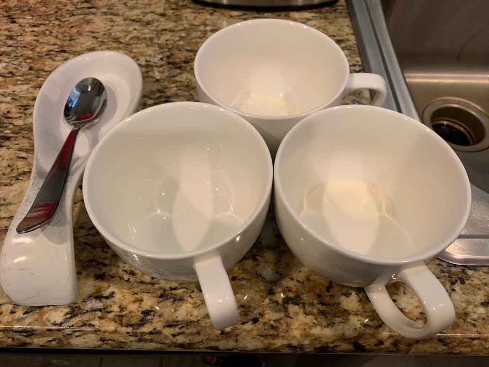

With Accessibility
The following examples are shown with accessibility features included.
The following examples are shown with accessibility features included.
This is text on a background whose color combination has a high contrast ratio, making it easier for low-vision visitors to read the text.
This is a video with a voiceover and the voiceover's captions available, making it easier for hard of hearing visitors to understand the voiceover.
This is a picture with proper alt text, viewable in this page's source code, which will be read by a screen reader to a blind visitor so that they know what the picture is without having to see it.
